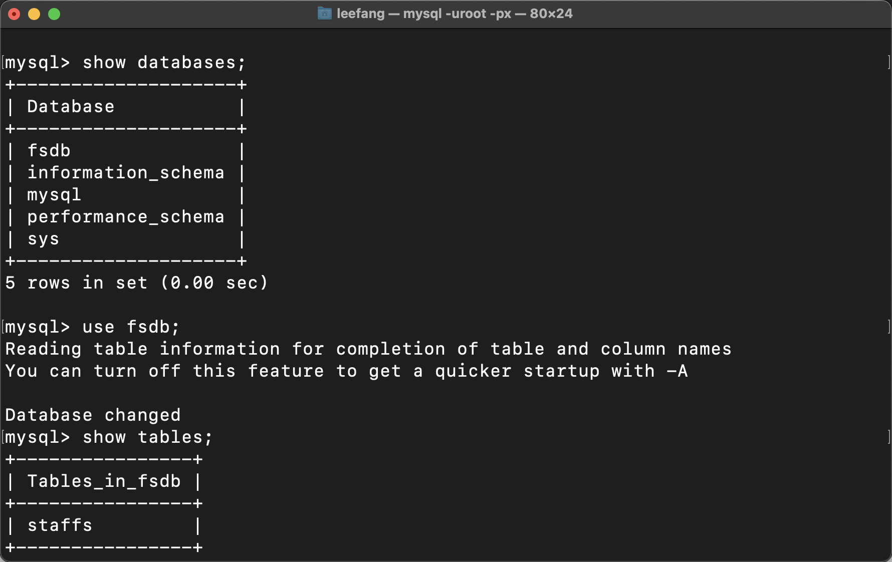
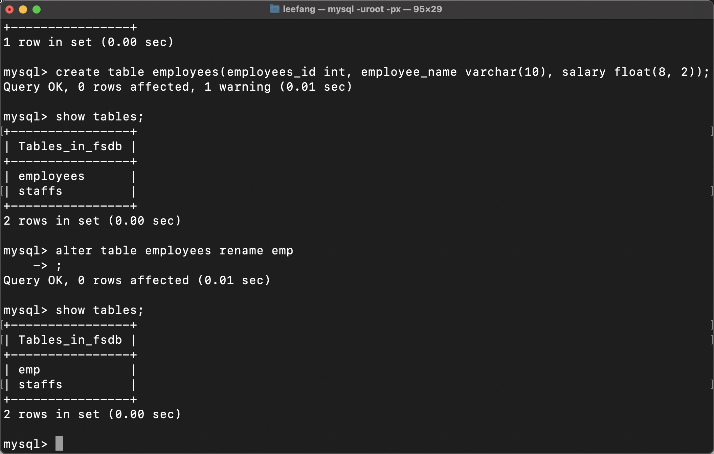

创建与删除数据库
数据库使用navicat傻瓜创建比较简单，列举一些数据库的常用操作。
查询数据库
show databases;
ps: 数据库代码一定要加分号，否则会出现箭头，出现箭头说明没有写完，添加分号即可。
创建库
CREATE DATABASE 数据库名 DEFAULT CHARACTER SET 字符编码
删除库
DROP DATABASE 数据库名称;
选择库
USE 数据库名;
mysql的数据类型
| mysql数据类型 | 含义 |
|---|---|
| tinyint(m) | 1个字节 |
| smallint(m) | 2个字节 |
| mediumint(m) | 3个字节 |
| int(m) | 4个字节 |
| bigint(m) | 8个字节 |
创建表与删除表
表就是数据库中的子集，用于存储用户数据。
创建表
CREATE TABLE 表名(列名 类型,列名 类型......);
例如：
create table employees(employee_id
int,employee_name varchar(10),salary
float(8,2));
然后查看自己创建的表：
show tables;
如图所示：

修改表
修改表就是把表的一些内容进行修改。
修改表名
ALTER TABLE 旧表名 RENAME 新表名;
示例一：
创建一个 employees 表包含雇员 ID ，雇员名字，雇员薪水。
create table employees(employee_id int, employee_name varchar(10), salary float(8,2));
示例二：
将 employees 表名修改为 emp。
alter table employees rename emp;
如图所示：
